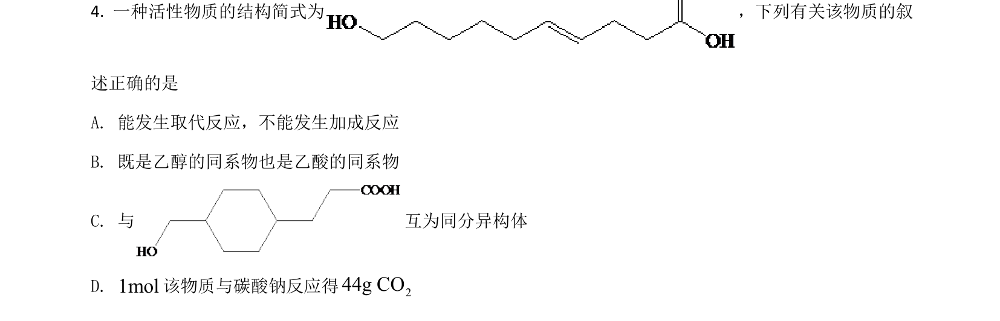
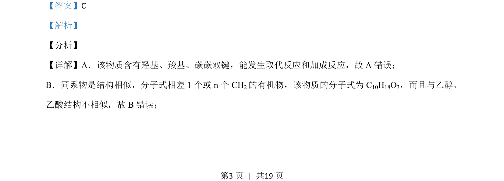
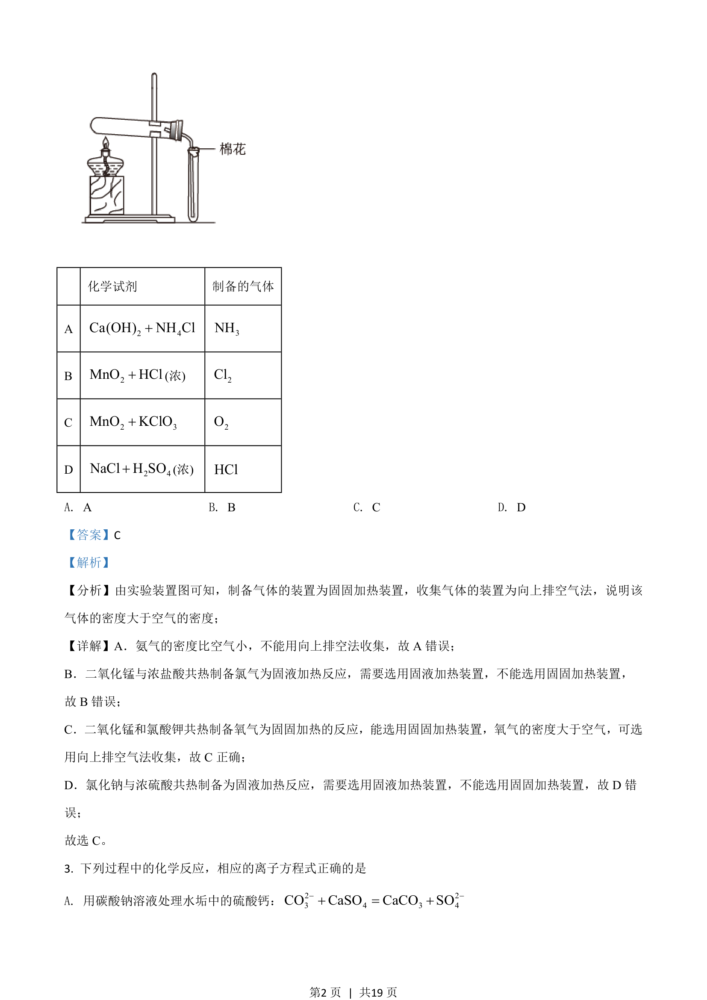

考点：有机化学 官能团 同分异构体 反应类型

本题通过有机物结构辨析官能团性质、同系物与同分异构体等概念。


📄 原 PDF 第 3 页：
素材/真题/吉林/2008-2024·（吉林）化学高考真题/2021年高考化学试卷（全国乙卷）（解析卷）.pdf
【答案】C 【解析】 【分析】 【详解】A．该物质含有羟基、羧基、碳碳双键，能发生取代反应和加成反应，故 A 错误； B．同系物是结构相似，分子式相差 1 个或 n 个 CH2的有机物，该物质的分子式为 C10H18O3，而且与乙醇、 乙酸结构不相似，故 B错误；